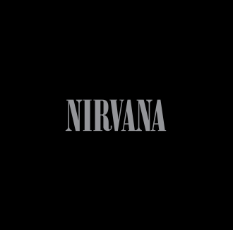
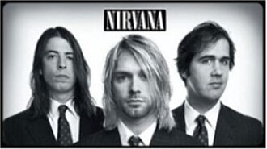
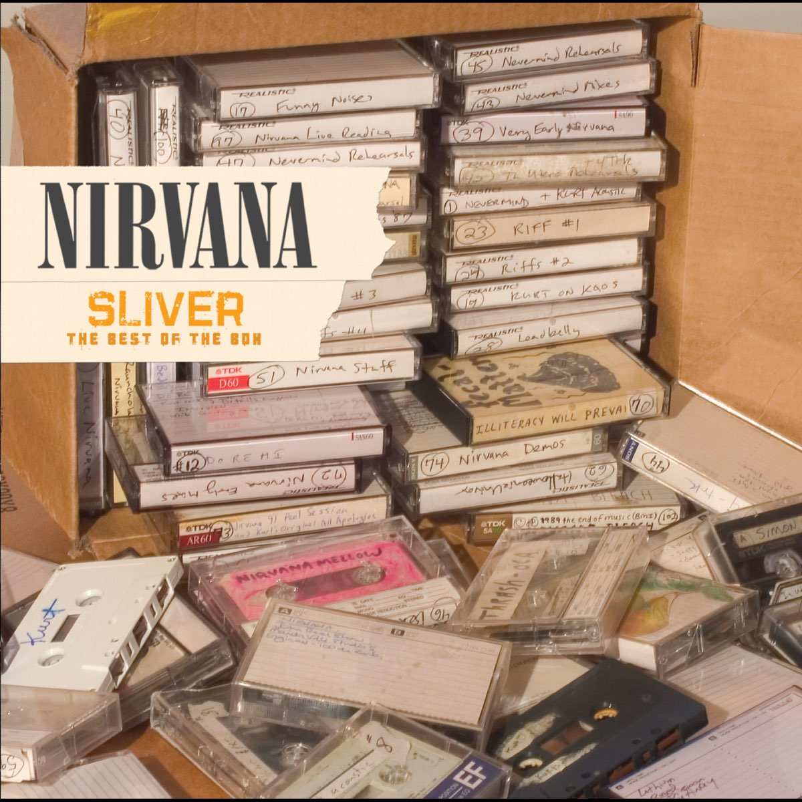

Members:
- Kurt Cobain
- Krist Novoselic
- Dave Grohl
Nirvana was an American rock band formed in Aberdeen, Washington, in 1987. Founded by lead singer and guitarist Kurt Cobain and bassist Krist Novoselic, the band went through a succession of drummers, most notably Chad Channing, before recruiting Dave Grohl in 1990. Nirvana's success popularized alternative rock, and they were often referenced as the figurehead band of Generation X. Despite a short mainstream career spanning only three years, their music maintains a popular following and continues to influence modern rock culture. Nirvana have released 3 studio albums, 21 singles, 5 live albums, 2 extended plays, 4 compilation albums, and 3 box sets and have sold over 50,000,000 albums worldwide. The best-selling album by Nirvana is NEVERMIND, which sold over 30,000,000 copies.
| Album name | NEVERMIND (1991) | MTV UNPLUGGED IN NEW YORK (1994) | IN UTERO (1993) | NIRVANA (2002) | BLEACH (1989) | FROM THE MUDDY BANKS OF THE WISHKAH (1996) | INCESTICIDE (1992) | WITH THE LIGHTS OUT (2004) | SLIVER (2005) | LIVE AT READING (2009) | ICON (2010) |
|---|---|---|---|---|---|---|---|---|---|---|---|
| Sold copies | 30,000,000 | 12,779,430 | 7,820,047 | 5,075,680 | 2,389,530 | 2,070,000 | 2,013,997 | 508,157 | 111,866 | 60,000 | 40,000 |
| Album covers | |
|
|
 | |
|
|
 |  | |
|